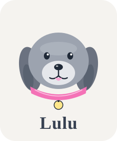

tinker design system
Brand marks, color, and type used across the renderer.
Mascot
Lulu, the gray dog

Lulu is tinker's mascot — a friendly gray dog with floppy ears and a pink collar. Use her where the product needs warmth and personality.
Scaling
Palette
Rose
#F9A8D4
Peach
#FDBA74
Amber
#FDE68A
Mint
#6EE7B7
Sky
#7DD3FC
Indigo
#A5B4FC
Violet
#C4B5FD
Type
Display 38 — Plus Jakarta Sans
Heading 22 — Plus Jakarta Sans
Essay 17 — Inter. The body voice for longer reads.
Body 14 — Inter. UI copy.
Micro 11 — labels & eyebrows